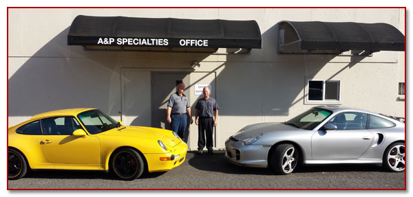

About Us
A & P Specialties was established back in 1985 and has been proudly serving Portland and the surrounding area ever since, focusing on Audi, Porsche, and Volkswagen brands. This RepairPal Certified shop features a very experienced and well trained team who are equipped with the state of the art tools and diagnostic equipment necessary for today's modern vehicles. Repairs performed here can range from minor and major mechanical repairs, to check engine light and computer diagnosis and repairs, to tires and wheel alignment, as well as your scheduled maintenance needs. All this work is backed by a 36-month / 36,000-mile warranty for your peace of
Repair Pal's survey of recent customers revealed a group who enthusiastically describe the team here as: “reliable”, “friendly”, “knowledgeable”, “honest”, and "exceptional". Rental cars, early bird drop off, and a waiting area with wireless Internet are also available for your convenience.
Service Manager, Paul & Owner, Alan
Our friendly staff is waiting to help you with your next automotive repair need.
My automotive career started back in 1972 when I was hired as an apprentice technician at Gateway Porsche / Audi. I learned my trade through on the job instruction and training classes through Riviera Motors Wholesale, the Porsche and Audi distributor. In 1985, I ventured out on my own, opening my repair center, A & P Specialties and have been at this same location ever since. Through hard work, we have grown, employing 3 full time technicians and a service manager. I enjoy helping our clients and sharing my knowledge with the technicians on the “classic” Porsches. I strive to provide the best service possible and pride myself on our reputation. My wife, Kim, and I have been married over 40 years, raising two boys. Away from work, my favorite recreation is riding my modified jet ski on the Columbia river. I hope to continue running A & P Specialties for may years to come. -Alan
Being a native of the Northwest, I love the climate and scenery in our little corner of paradise. I began a summer job as an apprentice technician at Gateway VW / Porsche / Audi in 1975. In just a few months, I was promoted to the service office as an advisor and dispatcher. After 10 years, I moved on to manage service departments for Ron Tonkin, Beaverton Toyota, Kuni BMW and the Hannah Dealerships. Alan and I have kept in touch over the years and when the time came, Alan offered me a position as his service manager. I am impressed daily at the dedication Alan has for hard, honest work, doing what is best for our customers, earning their loyalty and trust. My wife of 29 years, Lisa and I like to spend time at our family beach house in Pacific City. -Paul
After spending 4 years in the Marine Corps, Iraq war veteran Jose attended Universal Technical Institute for 2 years. Jose went on to Audi Specified Factory training in Pennsylvania. Settling in Vancouver, Wa Jose worked for Sunset Audi the past 11 yrs before joining A&P in 2014. When not attending sports or events with his wife Maria and children Natalie and Eric, Jose enjoys cycling. -Jose

I have been working at A & P specialties since February 2011. Starting my sophomore year in high school, automotive repair classes were my focus. In April of 2008, I enrolled in the automotive program at Mt. Hood Community College and began employment at Gladstone Honda. I always had an interest in European cars was referred to Alan at A & P through my instructor at MHCC. My passion is for cars and have found my career in that field. While at A & P, I have taken numerous technical classes including a three day technical class on the newest Porsche 996 and 986 M96 engine repairs. When not at work, I enjoy raising my three dogs and sailing on the Columbia river. -Phil
Austin joined the A&P team in December 2013. Working at both VW and Audi dealerships over the past 10 yrs Austin is Factory certified trained on both vehicle models. Obtaining ASE Certified Master Technician certificate along the way Austin has over 30yrs of experience on all European cars including Porsche and BMW. In his spare time Austin restores vintage european cars and is co-owner of Sputnik Housewares on Hawthorne with his wife Marci. -Austin
Long time customer, Deborah, has had her 1971 Porsche 914 since new. She has had Alan do ALL the service work and repairs at A & P and will let no one else touch the car. She will tell you the Porsche is NOT for sale and jokingly claims that it will used as her coffin. Thanks Deborah for you loyalty.
5 Stars
April 10, 2015 by Teri R.
Being new to Portland, we were told " A & P Specialists were as honest as the day is long." This is so true! All our experiences with them have been positive. Alan and Paul are honest, have an excellent work ethic and stand by their work. We would highly recommend them.
5 Stars
January 5, 2015 by Brandon W.
Hands down great service. Dropped off my 09 Audi A4 Avant after taking it 2 other places because it was idling rough and no one else could figure out the problem. These guys are champs, they diagnosed and fixed the problem. Turns out it was a rear main seal that was broken.
Quality of Service, Knowledgeable and Friendly
2014 by Andrew
I've taken several of my cars to Alan over the years, and have been continually impressed by the quality of the service and the pricing. The staff is extremely knowledgeable and friendly, and a pleasure to do business with. Highly recommend this shop.
Good & Honest Work
Feb 07, 2013 by Lees
My wife and I have been using A&P for several years now. First for our Jetta and now for our Vanagon. Love the service, very knowledgeable, honest care. We highly recommend.
More trusted than all Audi Mechanics
Oct 19, 2012 by Stephen G.
Alan is the best mechanic around. He is trustworthy, reliable, customer-first oriented, unequaled in fairness... I have driven several hours (from a different state) because I didn't want anyone else to touch my Audi S6! I would not trust anyone else but Alan!